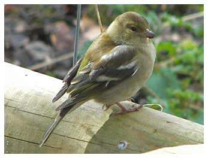

Chaffinch
A resident, breeding bird at the reserve.
19/02/67 - Maximum count of 50 Birds
10/02/12 - 30+ birds

22/05/17 - pair with young and another on nest
2022 - 2 males singing and evidence of nest building in June
2024 - 3 singing on 08/05. Max 5 together on 29/12